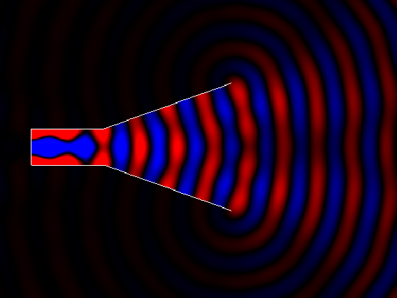
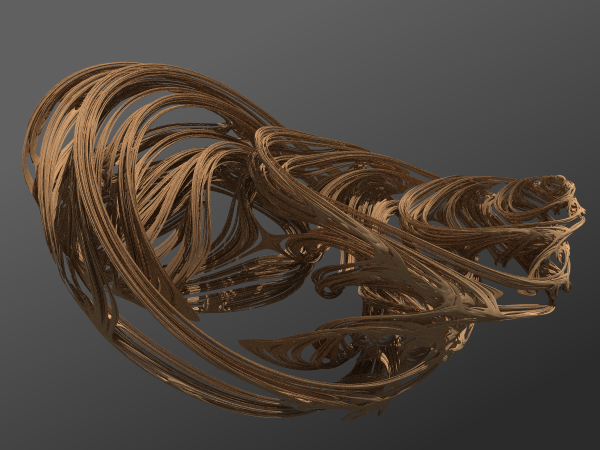

University of Colorado Boulder
Hello! I’m an undergraduate studying electrical engineering and applied mathematics at the University of Colorado Boulder. My general interests lie in applied electromagnetics, particularly in radio frequency systems and antennas.
I’m currently with the Antenna Research Group at CU, where I’m working on developing electrically small antennas (ESAs) for HF communication applications. I previously worked in the High Speed Digital Engineering Group at CU, where I performed work on high bandwidth conductive ink structures and developed custom instrumentation for isothermal I-V characterization.
In my free time, I enjoy taking walks in the woods.
I can be reached at edward@wawrzynek.com.

